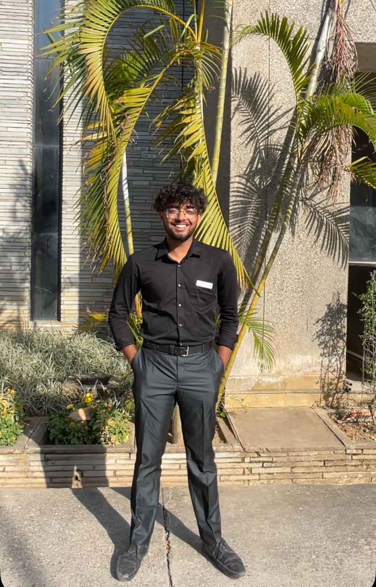

Hello, I'm Devansh
Hi, I’m Devansh Gaur, a B.Tech Computer Science student specializing in Cloud Computing & Virtualization at UPES, Dehradun. From building scalable applications to optimizing cloud infrastructures, I thrive on solving real-world challenges through technology.
As a Functional Testing Intern at Agilité Pvt. Ltd, I streamlined end-to-end testing workflows, enhancing software performance and reducing testing time. By boosting API efficiency by 14%, I demonstrated my ability to optimize systems through testing, automation, and cloud-based deployments.
Beyond testing, I am deeply involved in AI, full-stack development, and DevOps. My AI-Based Upskilling System using BERT processed 10,000+ job postings, achieving 90% relevance in recommendations. Similarly, my Inventory Optimization Platform improved order processing by 30% using advanced algorithms.
As the Social Media Head of the Microsoft Technical Community, I combined my technical expertise with digital strategy, increasing community engagement by 45% and leading a team of 20 members.
With certifications in Microsoft Azure, AWS, Salesforce AI, and Oracle Cloud, I continuously refine my skills in cloud computing, machine learning, and software development. My expertise spans Java, Python, Docker, Kubernetes, TensorFlow, and PostgreSQL, ensuring I can contribute to cutting-edge technological advancements.